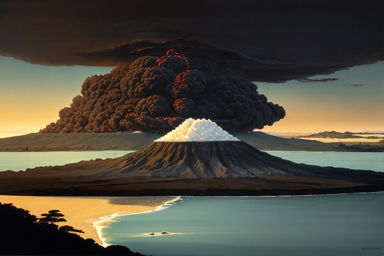
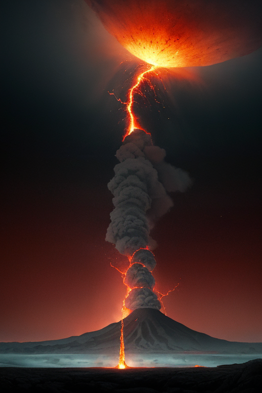
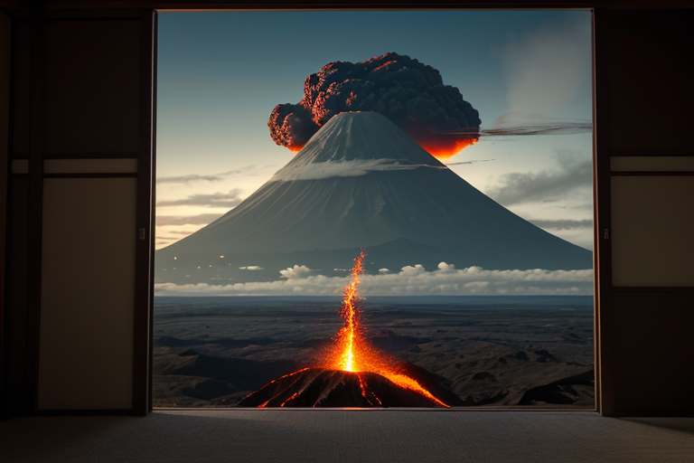
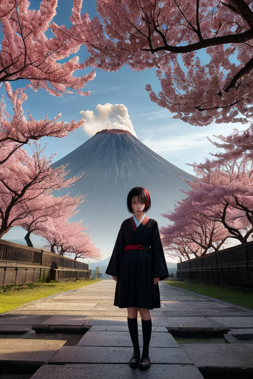
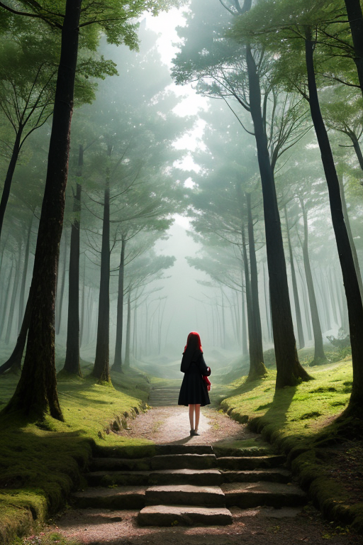

第一章 現実の鹿児島
あなたはまだ気づいていない。この土地にも、王がいることを。
桜島は今日も噴煙を吐いていた。本土との狭い海峡を隔てて、その巨大な山体は、黒い溶岩の肌に白い煙の帯をまとい、悠然と海に座している。フェリーが行き交う錦江湾の水面は、時に穏やかで、時にうねる。ここは、文字通りの境界だ。陸と海、活火山と街、そしてかつては薩摩と外とを隔てた境でもある。
港町を歩けば、潮風に混じって焼酎の薫り、さつまあげを揚げる油の匂いが漂う。路地裏の店先には、どっしりとした桜島大根が並ぶ。人々の会話には、どこか粘り強い温かみがある。しかしその底流には、この土地が常に何かと対峙し、時に抗ってきた歴史の重みが、静かに沈殿している。明治維新の原動力となり、やがて西南戦争という悲劇を生んだ薩摩の地。変革のエネルギーは、創造と破壊の両義を内包して、この風土に染み込んでいる。
その均衡の狭間で、一人の王が境界線を見つめていた。

第二章 歪みの兆候
霧島神宮の深い森。杉の巨木の間を、異質な振動が伝わってきた。南の海を越えて、巨大なプレートの圧力が、薩摩の地の下で複雑に絡み合う。それは物理的な歪み以上に、この土地が背負う「変革」という宿命そのものの共振だった。
サツマリア・リボルトは、神宮の境内に佇み、目を閉じた。掌から伸びる不可視の革命線が、地中の熱流とプレートの境界を探る。歪みは単なる力学的ストレスではない。外からの圧力が、この地に蓄積された「反骨」という感情記憶を刺激し、増幅させようとしていた。かつて外圧に抗って近代日本を切り開いたエネルギーが、今、地殻の軋みと共鳴し、予測不能な亀裂を生み出そうとしている。
「王、こちらです」
主席妖精リボルナが、赤い光を煌めかせて現れた。その報告は簡潔だった。桜島のマグマだまりに、通常とは異なる対流の渦。屋久島の縄文杉の根元から検知される、微細な地盤の傾斜。これらは全て、外からの大規模な歪みが、この「境界線」の王国の特性を増幅させた結果だった。
リボルトはゆっくりと目を開けた。瞳には、覚悟の色が静かに宿る。変革は常に、外部との衝突から始まる。そのエネルギーが破壊に向かうか、創造の糧となるか。彼の仕事は、その瀬戸際で、ほんの少しの「遅延」と「緩和」を仕掛けることだ。

第三章 王の葛藤
知覧特攻平和会館の静かな展示室。若者たちの写真が壁一面に並ぶ。リボルトは、その一つひとつを、感情を持たぬはずの目で見つめていた。ここには、変革という名の破壊が、最も残酷な形で刻まれている。薩摩が生んだ近代化の奔流は、やがてこの国の全てを飲み込み、多くのものを粉砕した。
「覚悟、か。」
彼は呟く。自らの王国テーマが、時にどれほど重いものかを、この地で初めて知った。西南戦争で散った西郷隆盛の像が、犬を連れて上野に佇む。あれもまた、薩摩が生み、薩摩が斃した革命の象徴だ。リボルトの内側で、何かが疼く。これは、感情か。
妖精リボルナが肩に舞い降りた。「王よ、迷うな。我々の仕事は、破壊を止めることではない。その衝撃が、全てを無に帰す前に、ほんの一瞬、間を置くことだ。」
地熱の均衡を司る彼女の言葉は熱い。その熱は、破壊のエネルギーそのものであり、同時に、新たなものを生み出す母胎でもある。
リボルトは、展示室の窓から遠く桜島を望んだ。噴煙は今日も空を焦がしている。彼は決断した。外からの歪みを、ただ防ぐのではなく、受け止め、自らの内で変換する。変革の暴力性を否定せず、しかし、その全てが無意味な破壊に終わらないよう、微調整する。それが、境界線に立つ王の、覚悟の形だ。

第四章 妖精との対話
知覧特攻平和会館の庭。リボルナは、若き特攻隊員たちの遺影が並ぶ展示室の前で、立ち止まった。
「彼らは、『破壊』を選んだ。でもね、王様」彼女の声は、いつもの強気さを潜め、静かだった。「その選択の奥には、絶望的な状況でさえ、何かを『創造』したい、守りたいという思いがあった。歪みは消せない。災害も、戦争も。私たちにできるのは、ほんの少し、その意味を調整することだけだ」
リボルトは無言で聞く。彼女は続けた。
「桜島の噴火が新たな土地を生むように、革命の熱も、古いものを壊し、新しい何かを産み落とす。出会いは別れを予感させ、破壊の影には創造の萌芽が宿っている。この境界線で感じる哀愁は、その両方がせめぎ合う音なんだ」
彼は、庭に咲くサツキの花を見つめた。鮮やかな赤は、黒い土壌からしか生まれない。革命とは、破壊と創造の不可分な営み。彼の覚悟は、その狭間で微かに光る均衡を、守り抜くことだった。

第五章 微調整と余韻
霧島神宮の深い森。訪れる人々の祈りは、静かな時間の流れに溶け込んでいく。サツマリア・リボルトは、杉の巨木の根元に佇み、人々の感情の「密度」を感じ取っていた。焦り、願い、諦め、希望。それらが交差する境界で、彼は微かな調整を行う。転びかけた子供の足元の石を、ほんの少しだけ風でずらす。迷いそうな人の視界に、道しるべとなる木漏れ日を落とす。革命とは、時にこれほど静かな働きかけでもあった。
知覧の平和な空の下、特攻平和会館を訪れた若者が、展示物の前で深く息を吸った。その胸に去来するのは、破壊の歴史への慟哭か、そこから紡がれた創造への希求か。王は、その青年の背中にそっと手を触れる。彼が次に目にする庭園の緑が、ほんの少し鮮やかに見えるように。悲しみだけが残らないように。
変革は破壊であり、創造である。彼はその両方の狭間で、均衡を保つ微調整者にすぎない。訪れる人々が去り、静寂が戻った時、彼は黒と赤の紋章を胸に押さえ、覚悟を新たにする。すべては、この哀愁と希望が交差する土地の、次の物語のために。
あなたの町にも、王がいる。